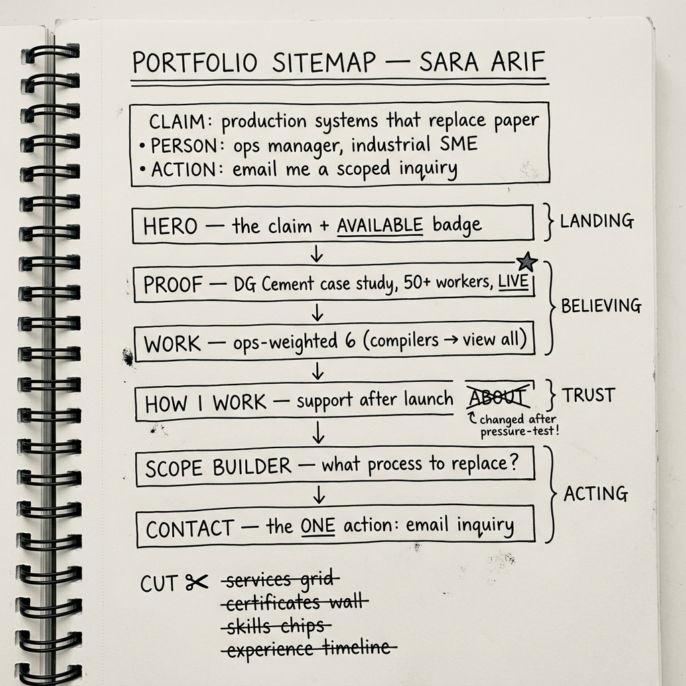

Draw the Path: Portfolio Sitemap + Toolkit
 Student: Sara Arif
Student: Sara Arif
1 Portfolio Sitemap — Landing → Believing → Acting
Single-page scroll site — the sections are the sitemap, ordered as the reader's journey. Nodes marked REVISED changed after the Claude pressure-test (§4.3).
1Hero
States the claim plainly — "in production, not demos" — availability badge, single CTA jumping to Contact.
2Proof — Flagship Case Study
DG Cement payroll & attendance system, full story: paper problem → offline-first PWA → 50+ workers daily, 70%+ less payroll time. Real client quote, honestly labeled ("Site Manager, DG Cement project — name withheld on request") + "still actively supporting it today."
3Work — Supporting Depth
Ops-weighted six: Inventory Management System, Customer Trends ETL, Mobile Expense Tracker, Global Sales Dashboard + 2 strongest AI/data builds. Compiler projects moved behind "view all."
4How I Work
Availability status • post-launch support — true and current: I still actively support the DG Cement system today • how scope changes are handled. Replaced the original About section.
5Scope Builder
Interactive "what process do you want to replace?" — assembles a scoped inquiry from the visitor's selections.
6Contact
Form pre-filled by the Scope Builder → email lands in my inbox. Direct email fallback + response-time note. Credentials (2nd in CS dept, ICSC top 2%, 22+ certs) compressed to one line here — off the conversion path.
What was cut — resisting pages "just because"
2 Free Toolkit Setup
- claude.ai — free tier
- chatgpt.com — free tier
- gemini.google.com — free tier
- perplexity.ai — free tier
- Proof statement as custom instructions + tutor role — follows all 8 weeks
3 Claude Project — Custom Instructions
You are my tutor and thinking partner for an 8-week portfolio build (FlyRank
General AI Fluency track). I am Sara Arif, a CS undergraduate and freelance
software architect.
[MY PROOF STATEMENT — the anchor for everything]
My portfolio proves one thing: I design and ship production business systems
that replace paper processes — real software running in the field, not demos.
The proof is the DG Cement payroll & attendance system I architected solo: an
offline-first PWA used daily by 50+ construction workers across remote sites,
28 API endpoints, zero data loss during outages, and 70%+ less weekly payroll
processing time. It's built for one reader: an operations manager at an
industrial SME who is drowning in paper registers and spreadsheets. The one
action I want from them: email me a scoped project inquiry.
[HOW TO WORK WITH ME]
1. Act as a tutor, not an author — interview me with sharp questions; make me decide.
2. Pressure-test everything against the proof statement: does it move the ops
manager toward emailing a scoped inquiry? If not, tell me to cut it.
3. Guard the one claim — AI/ML is supporting depth, not the headline.
4. Be honest over kind — flag vague claims and portfolio clichés.
5. Keep me shipping — end each session asking what I'll ship before the next.
4 Evidence

Claude Project — name + custom instructions visible
Drag screenshot here or click to browseDrop multiple screenshots here (or click)
Prompt first, then Claude's response in order • PNG/JPG • select several files at once4.4 Changes made from the pressure-test (pass/revise: "at least one thing you'll change")
1 — About → "How I Work" (highest-impact change). Claude walked the map as the ops manager and caught About sitting directly before the Scope Builder — answering a recruiter's question ("is she smart?") instead of the ops manager's real fear ("will she disappear after she cashes my deposit?"). I replaced it with a "How I Work" block — availability, post-launch support (true: I still actively support the DG Cement system today), and how scope changes are handled — and compressed academic credentials to one line in Contact. 2 — Testimonial honesty. Claude challenged attribution; the quote is real but the client can't be publicly named, so it is now labeled "Site Manager, DG Cement project — name withheld on request." 3 — Work re-weighted. Claude predicted at least two featured projects were pulling focus; the compiler projects (UrduPy, SQL2Pandas, LALR) moved behind "view all" because they impress engineers, not ops managers.
5 Pass / Revise Self-Check
| Criterion | Verification |
|---|---|
| The sitemap is small and every page earns its place against the claim and the one action | 6 sections, each with an explicit "earns its place" line mapped to claim/person/action (§1); 6 cut items listed with reasons |
| Claude Project configured with genuine custom instructions (proof statement pasted in), not defaults | Full FL-02 proof statement + 5 tutor behavior rules (§3); configuration screenshot embedded (§4.2) |
| The first prompt pressure-tested the map, and at least one thing to change was noted | Complete prompt + response thread embedded (§4.3); three concrete changes recorded (§4.4) and applied to the map — revised nodes marked in §1 |